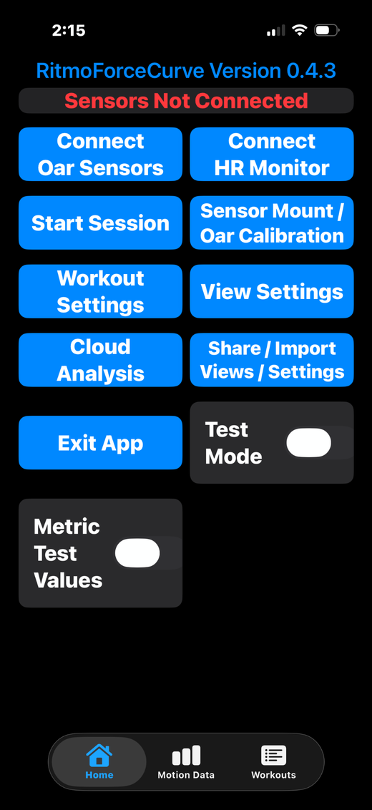
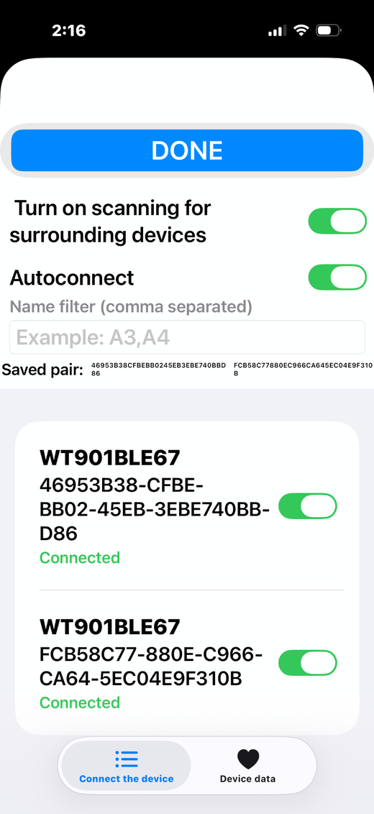
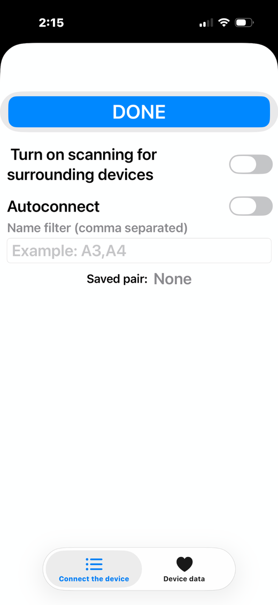
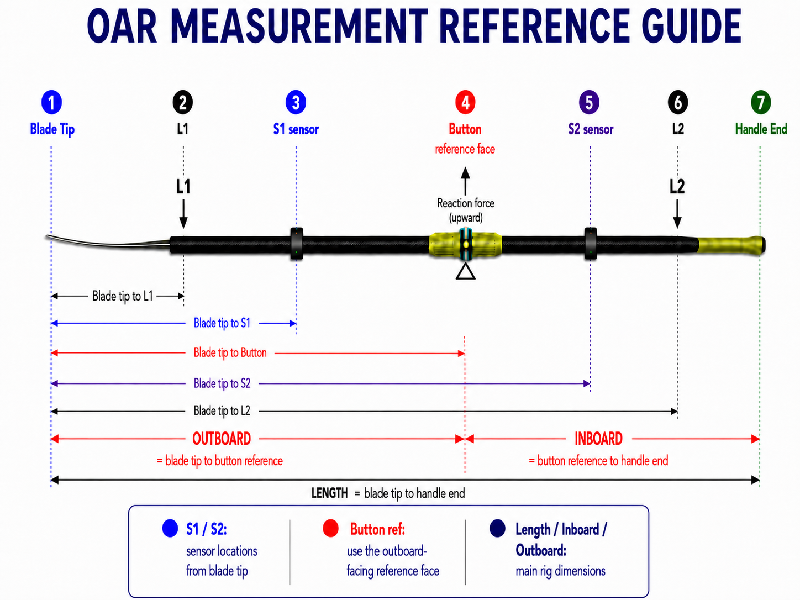
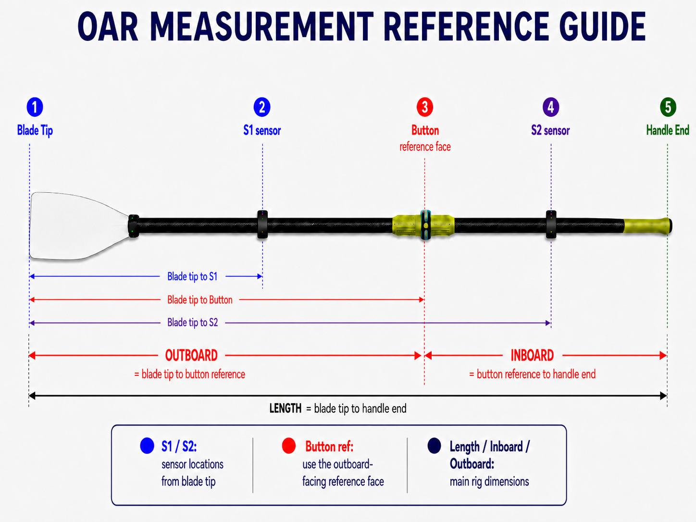
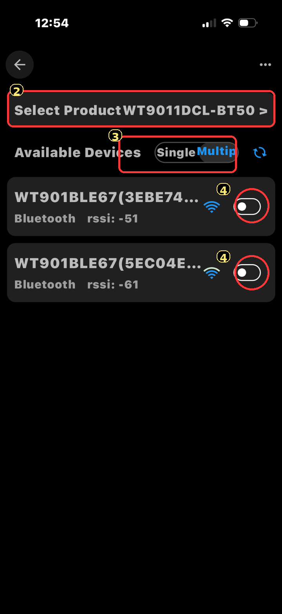
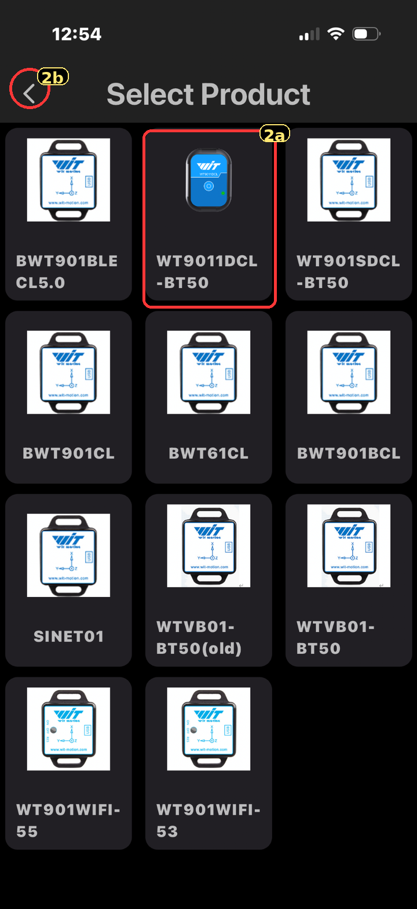
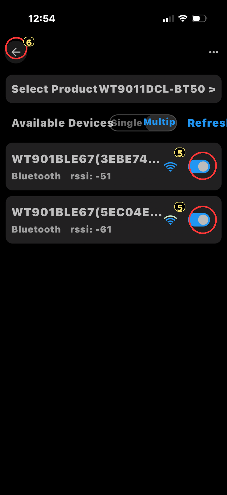

ON THE WATER
Feedback as you row
Follow bend, moment or handle force alongside oar speed as you row. Choose the curves and numbers that help you connect the catch, drive and release.
Explore the iOS app →Watch the stroke and its curves together. Use full screen for a closer look.
See how you load the oar, carry the drive and release the blade.
Record oar motion and loading, see live feedback on your iPhone, and review each stroke alongside GPS and boat movement after your row.
ON THE WATER
Follow bend, moment or handle force alongside oar speed as you row. Choose the curves and numbers that help you connect the catch, drive and release.
Explore the iOS app →AFTER YOUR ROW
Compare strokes, pieces and group averages. See the GPS route, boat motion and stroke replay together when those recordings are available.
Explore cloud analysis →GET SET UP
Assemble the kit, select your saved oar and connect its sensors. Guided alignment and a stiffness calibration keep the measurements tied to your setup.
Assemble your kit →START WITH YOUR PHONE
Connect your saved oar, complete the guided alignment, and record the workout with live curves and metrics. Use two sensors per oar; connect four to record two oars.
iOS setup & recordingRecord your oar sensors in WitMotion. Add a separate Sensor Logger recording when you want phone motion and GPS in the report.
Android setup & recordingBoth recording paths use the same Cloud Analysis and interactive report. See pricing for available products and plans.
FROM THE OAR TO THE BOAT
Open the example to explore oar curves, GPS and boat motion from one recorded workout. Follow individual strokes or compare averages, then use the boat-and-oar replay to see the movement.
Choose metrics by subject: Oar, Boat, GPS, Time and Body. Save your plot and replay setup to reuse on another workout. Boat movement needs a securely mounted phone; blade depth and water-contact trails depend on the recorded setup and supplied geometry.
MEASURE THE OAR YOU HOLD
Two sensors measure how the oar bends and moves. With the correct stiffness calibration and dimensions, the app uses that bend to calculate moment, force, work and power.
The motion measurement follows the shaft through the catch, drive and release. Sweep angle, blade rotation and loading describe different parts of the stroke; the metric guide explains each one.
How the measurements work →THE IPHONE APP
Live curves and clear numbers on the water. Review all your workout metrics in tables and maps when you finish.
WHAT YOUR IPHONE CAN DO
See the bend / moment / force curve with oar motion and selected metrics. Follow changes in power, rate and stroke shape as you row.
Build a live rowing view with large metric tiles, curves or a mix of both. Choose the available measurements and use the question marks for explanations.
Combine the oar sensors with iPhone GPS and boat motion. Add heart rate from a connected source. Each measurement uses the inputs it needs.
Record work and recovery intervals, use the automatic piece timer, and save the workout with the oar settings used for that row.
Review all your workout metrics in tables and maps. Explore the session’s numbers and route, and share available workout data.
Upload from the app to explore workout metrics, tables and route maps in an interactive report.
Cloud Analysis →METRICS & CURVES
The core catalog is grouped by Oar, Boat, GPS, Time and Body. Bend / moment / force is presented together, with a question mark beside each item for its explanation.
Loaded oar sweep from confirmed load engagement to the end of the loaded drive.
Work per stroke divided by the complete catch-to-catch cycle time, including recovery. Requires calibrated bend and supported oar motion.
Power (W) = positive drive work (J) / stroke-cycle time (s)
Stiffness calibration scales the work and power values. A longer recovery reduces power for the same work per stroke.
Effort-equivalent 500 m pace calculated from positive oar power.
PowerSplit (s/500 m) = 500 × (2.80 / power in W)1/3
GPS pace describes travel over the ground. Wind, current, hull resistance and crew movement affect how oar effort relates to boat speed.
Position along the loaded stroke arc where half of the drive work has been completed. A value below 50% places more work earlier in the arc.
Position along the loaded stroke arc where shaft bend reaches its peak.
Oar sweep from the catch to confirmed load engagement. The shaft may move and bend before sustained loading is established.
Oar sweep from the loaded-drive endpoint to the feather threshold. It is zero when feathering itself defines the loaded-drive endpoint.
Oar sweep from the feather threshold to the finish reversal. It describes movement after feathering begins, separately from the end of the loaded drive.
Recovery time divided by drive time. A value of 2 means recovery lasts twice as long as the drive.
Positive work accumulated as the loaded oar rotates through the drive. Requires the oar stiffness calibration.
Drive work (J) = ∫ moment (N·m) × dθ (radians)
Both the load and the angle through which it acts matter. A brief high peak and a longer steady pull can produce different work. Holding load without further sweep adds no sweep work.
Full oar sweep from catch to finish reversal, including unloaded movement.
Increase in handle rotation speed from load engagement to peak speed, divided by the elapsed time.
Effort-equivalent speed calculated from oar power. Measured speed over the ground is available under GPS.
Highest handle rotation speed during the drive.
Mean oar sweep speed during the drive.
Three views of loading through the drive: shaft bend, bending moment about the pin, and estimated handle force.
Moment (N·m) = Moment/Bend Factor (N·m/°) × bend (°)
Handle force (N) = moment (N·m) / pin-to-hand distance (m)
The Moment/Bend Factor converts measured bend to moment for the oar and sensor positions. Changing it scales moment, work and power while leaving stroke timing and measured angles unchanged. The saved inboard lever arm determines the estimated handle force.
For example, 300 N·m through a 1.0 m lever corresponds to 300 N of perpendicular force; through a 1.2 m lever it corresponds to 250 N.
The app’s Moment/Bend Factor (MBF) uses N·m/°. A saved bend factor (FBF) in J/°² uses the older coefficient: FBF = MBF × π/180; MBF = FBF × 180/π.
Oar identity, side, geometry, sensor positions, alignment and stiffness calibration must match the recording for comparable results. A report override changes that report’s calculations; the saved setup governs future recordings.
Oar sweep rotation speed through the stroke. Positive is the drive direction; negative is recovery.
Estimated vertical position of the blade’s bottom edge, using oar geometry and the feather/square transition. The squared blade extends deeper than the feathered blade.
Negative is down from the reference pin plane. The result depends on the saved geometry, supported oar inclination and boat-motion correction. Blade position, the animation’s waterline and immersed area are estimates; they do not directly measure water level or blade immersion.
Estimated shaft-axis blade-tip position from oar inclination, outboard length and boat-motion correction. Requires supported oar geometry and phone motion.
Negative is down from the horizontal reference plane through the pin. The phone’s hull reference and oar alignment affect this estimate. It describes blade-tip position, not directly measured water immersion; the animation’s waterline and immersed blade area are also estimates.
Horizontal oar rotation with zero at the catch, showing the drive and recovery. Requires supported motion from the oar’s sensor pair.
Blade orientation through the stroke: +1 is square and −1 is feathered. The transition shows when the blade rotates between these positions.
Difference between the highest and lowest relative boat displacement during a complete catch-to-catch cycle. It uses the Relative boat distance curve from phone motion; GPS is not required.
Distance check (cm) = 100 × [max(x) − min(x)]
Here x is relative forward distance in metres, obtained by integrating relative boat speed and centering it around the cycle reference. This describes the range of the boat’s movement ahead of or behind that reference.
Difference between the highest and lowest relative boat speed during a complete catch-to-catch cycle. It uses phone motion; GPS is not required.
Speed check (m/s) = max(u) − min(u)
Here u is relative boat speed from gravity-corrected phone acceleration, centered on the cycle’s time-weighted mean. The check measures the full range of speed variation through the stroke.
A model of speed variation based on squared fused ground speed across the complete stroke cycle, compared with steady travel at the same mean speed. It is not a direct measurement of rowing energy lost or water resistance.
For fused ground speed v(t) and cycle duration T, the time-weighted mean is:
μ = ∫₀ᵀ v(t) dt / T
Energy-loss check (%) = 100 × [∫₀ᵀ v(t)² dt − Tμ²] / (Tμ²)
Constant speed gives 0%. The calculation requires a complete supported cycle and positive mean speed. Current affects the ground-speed reference, so values should be interpreted in that context.
Difference between the highest and lowest hull roll angles during the stroke cycle.
The phone’s orientation separates gravity from acceleration. Where a saved physical boat-level reference is available, it provides the level reference. Otherwise, neighbouring complete strokes establish a neutral gravity plane, using a 20-second local reference by default.
The range shows changes in set within the stroke. A local neutral plane follows the boat’s trim and does not establish absolute hull level.
Difference between the highest and lowest bow-up/bow-down angles during the stroke cycle.
Phone orientation supplies hull attitude. Without a saved physical boat-level reference, the neutral plane comes from neighbouring complete strokes, using a 20-second local reference by default. This describes movement around local trim; slow trim and phone mounting tilt cannot be separated by that local reference alone.
Ground speed combining GPS with phone acceleration to describe changes within the stroke. Zero means zero ground speed. Valid GPS speed is used when fusion is unavailable.
Current affects the ground-speed baseline. Relative boat speed uses a different reference: deviation around the stroke cycle’s mean speed.
500 m pace calculated from the displayed fused boat speed, including its GPS fallback. A valid positive speed is needed to show a split.
Estimated range of vertical hull movement through the complete stroke cycle, from gravity-corrected phone motion.
It describes relative rise and fall around the cycle reference. It does not measure absolute height above the water or the waterline.
Lowest speed deviation relative to the stroke-cycle mean. A negative value means slower than that reference, not backward travel. Requires supported phone motion across the full cycle.
Gravity-corrected acceleration along the hull, filtered for viewing. Requires a phone fixed securely to the boat.
The phone’s orientation separates gravity from boat acceleration. Integrating this motion supplies the relative boat-speed and distance curves; supported orientation and a complete stroke cycle are needed for their check values.
Speed variation through the stroke from gravity-corrected phone acceleration, centered on the cycle’s time-weighted mean.
Positive means faster and negative means slower than that reference. A negative value does not mean backward travel. Its full-cycle range gives Speed check; GPS is not required.
Relative forward displacement through the complete stroke cycle, calculated by integrating relative boat speed and centering the result around the cycle reference.
The curve shows the boat ahead of or behind that reference. Its full-cycle range gives Distance check; GPS is not required.
Speed over the ground derived from GPS positions. Zero means no ground travel. Water current affects this speed, so it differs from speed through the water.
Distance traveled over the ground during the recording, calculated from GPS positions. It follows the ground track, including the effect of current.
Time to travel 500 m at the measured GPS speed. A valid positive speed is needed to show a pace.
Pace for the current detected piece, calculated from its elapsed time and distance.
Distance traveled in the current detected piece.
Direction of travel clockwise from true north. Requires valid GPS data and enough movement to establish a course. It describes travel direction, independent of how the phone is mounted.
Strokes per minute measured from successive confirmed catches.
Elapsed workout time.
Elapsed time in the current detected piece.
Identifier used to locate a stroke in the workout data.
Elapsed recording time at the stroke’s catch.
Heart rate over the stroke interval, from a connected heart-rate source.
Estimated active calories from the measured positive oar work represented by the recording. The calculation uses the measured work before display smoothing and an assumed net efficiency.
Calories from work (kcal) = W / (4184 × η)
W is the represented measured positive work in joules, and η is the configured net efficiency. The current default is 20% (η = 0.20), an assumption rather than a measurement of your personal efficiency.
Calibrated oar work and a valid efficiency are required. Missing work remains unavailable.
Estimated active calories from heart-rate reserve, bodyweight and a supplied VO₂max. For each supported interval:
r = clamp((HR − resting HR) / (maximum HR − resting HR), 0, 1)
Active calories (kcal) = r × (VO₂max − 3.5) × bodyweight (kg) / 1000 × 5 × duration (minutes)
Requires recorded heart rate, duration, bodyweight, VO₂max and configured resting and maximum heart rates. The current app defaults to 65 bpm resting and 170 bpm maximum; enter your personal values. Maximum heart rate must exceed resting heart rate; VO₂max must exceed 3.5 mL/kg/min. Missing recorded heart rate, bodyweight, VO₂max or supported duration leaves the estimate unavailable.
Heart-rate reserve approximates oxygen-uptake reserve. VO₂max is in mL/kg/min; 3.5 mL/kg/min is an assumed resting oxygen uptake, and 5 kcal per litre of oxygen is an approximate energy conversion. Subtracting the resting oxygen level makes this an active-energy estimate.
Planned for iOS.
Measured mechanical work expressed in kilocalories. This describes mechanical output at the oar, not calories used by the body.
Mechanical work (kcal) = measured work (J) / 4184
Requires calibrated measured work. No metabolic-efficiency assumption is applied to this unit conversion.
Planned for iOS.
A fallback calorie estimate when VO₂max is unavailable, using the general Keytel exercise regression with recorded heart rate, age, bodyweight and sex. Duration converts the estimated energy rate into kilocalories.
This is a general exercise estimate with limited rowing-specific validation. It estimates gross energy during exercise. Comparison with active calories requires a separate subtraction for resting energy; the exercise equation must not be used to estimate energy at rest.
Planned for iOS.
A proposed personalized estimate using measured oar work, recorded heart rate and body-profile information, including bodyweight.
The model needs calibration and rowing-specific validation. It must account for heart-rate lag and the effects of heat and fatigue on heart rate.
The proposed method combines information from these inputs without adding two complete calorie estimates together.
LOAD · MOVEMENT · EFFORT
Shaft bend describes loading. The force, its lever arm and the oar’s rotation determine how that loading becomes work and power.
At the catch, the shaft can bend before the oar has swept through much angle. There is load, but little sweep work has accumulated. Work increases as that load moves through the drive.
A short, sharp peak and a longer, steadier pull can reach the same maximum load while producing different amounts of work. Holding the oar under load without further sweep adds no sweep work, although shaft bending can store elastic energy.
Force applied through a lever produces a turning effect, or moment, about the pin. Only the component of force perpendicular to the lever contributes to that turning effect.
Moment (N·m) = perpendicular handle force (N) × pin-to-hand distance (m)
Handle force (N) = moment (N·m) / pin-to-hand distance (m)
For example, 300 N·m through a 1.0 m lever corresponds to 300 N of perpendicular force. Through a 1.2 m lever, the same moment corresponds to 250 N.
The shaft bends under load. Its stiffness, together with the positions where that bend is measured, determines the relationship between bend angle and moment. A calibrated Moment/Bend Factor expresses that relationship.
Moment (N·m) = Moment/Bend Factor (N·m/°) × bend (°)
A stiffer shaft requires more moment to produce the same bend angle.
Work adds up the moment carried through each part of the drive. The sweep angle in this calculation is in radians.
Drive work (J) = ∫ moment (N·m) × dθ (radians)
Power (W) = positive drive work (J) / full stroke-cycle time (s)
The full stroke cycle includes drive and recovery. Work depends on both the load and the angle through which it acts; power also accounts for the time between catches.
The relationship between this effort and boat speed also depends on hull resistance, wind, current and crew movement.
FROM RECORDING TO UNDERSTANDING
Bring the signals from your row into one interactive workout report. See the effort, compare the strokes and connect the curves to the movement.
Oar data, phone motion, GPS and heart rate stay connected to the settings captured with the workout.
Stroke detection, calibrated effort, motion curves, pieces and groups turn recorded signals into useful comparisons.
Timelines, curves, summaries, maps and replay offer different views of the same session.
BUILT AROUND YOUR WORKOUT
Analysis supports the app’s workout recordings and the supported Android oar and phone recordings.
The recorded oar setup stays with the workout. Analysis settings can be revised when the original recording is available.
Reusable report setups keep preferred plots, scales, map controls and replay views ready for another row.
Downloadable reports, data exports and plot images make it easy to keep and review the results.
SEE THE RESULT
See the report’s actual controls, stroke data, curves and replay.
YOUR WORKOUT, IN VIEW
See how effort, oar movement and boat motion change through your row. Move from the whole session to the detail of a stroke.
Metrics over time and the GPS route reveal changing effort, pace and the shape of the session.
Loading and motion curves show how the drive develops and how the oar and boat move through the cycle.
Pieces and selected strokes bring repeated efforts together, making changes in timing and stroke shape easier to see.
A synchronized boat-and-oar model connects the curves to the motion behind them, using the recorded inputs and geometry.
INTERACTIVE EXAMPLE
The example below contains the workout’s plots, recorded values and interactive controls. Open the full report for more room.
REPORT SECTIONS
| Section | What you can see |
|---|---|
| Boat & Oar Motion curves | Stroke curves with the matching boat-and-oar replay. |
| Session Overview | Metrics across the workout and the GPS route, with selections for closer comparison. |
| Piece Summaries | Continuous rowing efforts, their duration and rest, and selected summary measurements. |
| All Strokes | Individual stroke values, selectable columns and data exports. |
Your display preferences can travel to another workout as a saved setup. CSV exports, plot images and downloadable reports keep the results useful after the review.
Help with comparisons, controls, saved views and downloads →
Oar kits, iPhone subscriptions, Cloud Analysis and plans for your team.
30-day satisfaction guarantee · 5-year full replacement warranty
$6,000 / year
$11,000 / year
$16,000 / year
Set up your equipment, record a workout and explore your results.
Fit the housings and straps, then position the sensors on the oar.
Check the orientation of each sensor before alignment.
Watch the mounting demonstration.
Keep a copy of the assembly and setup instructions.
From the first connection to a saved workout.
Choose a saved oar or set up a new one.
Check connections, mounting and data quality.
Follow the alignment movements and prepare to row.
Choose the metric tiles and curves shown while you row.
Set up recording, smoothing and piece detection.
Save, share and import your setup.
Understand the dimensions and stiffness used for your oar.
Measure the relationship between load and shaft bend.
Enter and check the measurements for your setup.
Organize saved oars and calibration records.
Find your way around, compare strokes, and save or share your view.
Check connections, missing signals, mounting, calibration, units and GPS.
Prepare a recording, review its settings and run the analysis.
Compare strokes, work with plots and maps, save views and export results.
Mount the phone and understand the motion and replay references.
Record the oar sensors with WitMotion.
Add a matching phone recording for the workout report.
Need a hand? Contact RitmoForceCurve →
Oar Kit · Assembly & Mounting
Assemble each sensor in its housing, secure both mounts to the oar, then use the guided motions to align them. The same kit works with iOS and Android recording.
Lay out the parts below. Repeat the same assembly for your second sensor.


The curved saddle snaps flush into the matching curve at the back of the housing, then rests against the oar. The drawings below show how the parts engage.
Start with the empty black housing. Hook the retaining flange of one yellow clip over the matching housing edge, then press the clip fully home. Fit the second clip on the opposite side, with its flange toward the housing.
Check that both clips are seated and their long strap slots are unobstructed.

Stretch the flexible ring around the outside edge of the sensor. Keep it even around the sensor rather than twisted or bunched at a corner.
Insert the sensor through the open back of the housing. Press it in evenly so the button and logo face remain visible through the front opening. Check that the ring stays seated as the sensor goes in.

The saddle goes on the curved back of the housing, between the sensor and the oar. The housing and saddle have matching curves, so they nest flush together. The concave outer face rests against the shaft. The snap lips face the housing, away from the shaft.
Engage one edge lip, then gently flex the opposite edge until it snaps into place. Check that both lips are engaged, the saddle sits flush with no gap, and the sensor remains seated.

Place the saddle against the shaft and wrap the strap around the oar. At each yellow clip, feed the strap through the slot from the inside (the oar side) to the outside. Fold each end back onto the strap on that same side and press it firmly onto itself.
The strap has hooks and loops together on one face; the other face is smooth. Keep the smooth back against the oar, then fold each end back without twisting so the two fastening faces meet.
The mount should stay put when you gently try to slide or rotate it. Check it again after feathering and squaring the oar.

Check orientation before alignment
Square the blade first. With the oar shaft approximately horizontal and the blade face vertical, fit both mounts with the sticker and button faces upward. Keep the offset buttons toward the blade. This puts the sensor faces approximately parallel to the horizontal drive/bend plane.
RZ is rotation about the sensor’s Z-axis. Z points out through the sticker face, perpendicular to the drive/bend plane. Rotation about that axis follows the oar’s sweep and bending in that plane. Feathering and squaring rotate about the shaft, approximately the Y-axis. The sign of drive rotation differs between port and starboard; the arrows below identify the axes, not a universal positive-drive direction.
Look straight at the sticker with the button nearer the bottom: +Y is up, +X is right, and +Z comes toward you. On this Ritmo sticker, the yellow curve points toward +Y; the lettering and offset button are nearer −Y.

The ring, cage and clips do not change the sensor axes. Keep the button and sticker visible. The USB-C port is hidden by the ring and mount hardware, so use the button end to check direction once assembled.

Use the same orientation for both sensors: one on each side of the oar button/collar, with +Y toward the handle and −Y toward the blade. Wrap and secure the hook-and-loop strap (Velcro) as shown in the assembly steps. Keep the mounts clear of the oarlock and your hands.

Next · Motion Alignment
With both mounts secure, record the still, feather/square and sweep movements. The app or Cloud Analysis uses them to learn how the sensors sit on this oar.
Use this motion alignment after mounting or repositioning a sensor. Oar stiffness calibration is a separate step that sets the Moment/Bend Factor used for moment, work and power.
Confirm the active oar name, side, sensor identities and sensor positions. Save the motion alignment and the stiffness calibration for that setup, then make a short recording to check both sensors. Repeat alignment and review the stiffness setup whenever you move a sensor.
A phone used for boat motion needs a secure hull mount. Follow the iOS recording guide or Android phone-motion guide for the data to record.
Oar Kit · Sensor Direction
Use the offset button to tell which way the sensor should face along the shaft. Then let the motion alignment establish the sensor reference for your oar.
The round button is offset within the housing opening. Fit the sensor so that this button sits closer to the blade end of the oar.
Repeat alignment if either sensor is removed, turns in its mount, or moves to a different position.

Check orientation before alignment
Square the blade first. With the oar shaft approximately horizontal and the blade face vertical, fit both mounts with the sticker and button faces upward. Keep the offset buttons toward the blade. This puts the sensor faces approximately parallel to the horizontal drive/bend plane.
RZ is rotation about the sensor’s Z-axis. Z points out through the sticker face, perpendicular to the drive/bend plane. Rotation about that axis follows the oar’s sweep and bending in that plane. Feathering and squaring rotate about the shaft, approximately the Y-axis. The sign of drive rotation differs between port and starboard; the arrows below identify the axes, not a universal positive-drive direction.
Look straight at the sticker with the button nearer the bottom: +Y is up, +X is right, and +Z comes toward you. On this Ritmo sticker, the yellow curve points toward +Y; the lettering and offset button are nearer −Y.
The ring, cage and clips do not change the sensor axes. Keep the button and sticker visible. The USB-C port is hidden by the ring and mount hardware, so use the button end to check direction once assembled.
Use the same orientation for both sensors: one on each side of the oar button/collar, with +Y toward the handle and −Y toward the blade. Wrap and secure the hook-and-loop strap (Velcro) as shown in the assembly steps. Keep the mounts clear of the oarlock and your hands.
The mounting check gets the sensors facing the right way. The alignment recording uses deliberate oar movements to account for the remaining mounting angles and resting sensor offsets.
Choose the instructions for your phone below. Each guide takes you from connection and alignment through recording and upload.
Sensor direction and motion alignment establish the measurement reference. Stiffness calibration separately sets the conversion from bend to moment, work and power. Check both after changing the sensor positions.
Oar kit · setup reference
Setup videos for mounting and using the RitmoForceCurve oar sensors.
Step-by-step overview of mounting the sensors and connecting them for use on the water.
Open videoUse the video as a mounting overview and the illustrated guide for the current assembly sequence. Both offset sensor buttons face the blade; sensor +Y points toward the handle. Finish with motion alignment and the stiffness calibration for your oar.
IPHONE HELP
The complete iPhone workflow, with detailed guides for the oar, recording and saved workouts. Use the question marks in the app for explanations beside individual controls.
IPHONE SETUP & HELP
Follow the setup in order for a new oar, or return to a guide whenever the equipment or settings change.
RECORDING GUIDE
Use the latest iOS beta. Start with these steps and open the linked guides for more detail.
Turn on the sensors and open Connect Oar. Choose a saved name, then tap Connect. Use Scan oar label if the oar has a QR label; check that its saved setup matches the physical oar and sensor positions.
For a new oar, choose Set up a new oar, connect its two sensors, enter the name, side and type, then tap Save and connect. Enable Connect automatically next time for the selected name if you want it remembered for the next app launch. Confirm that the expected sensors are connected before starting.
Manage Oars includes saved oars, named pairs and separate managed copies. Choosing a record to inspect does not change which oar is connected for rowing. Check whether you are editing the saved oar or an independent managed copy.
Open Oar Settings → Align Sensors. Record Bias, Feather and square, Feathered level sweep and Square level sweep, then calculate and save the alignment. Repeat after moving, rotating or replacing a sensor.
After the alignment is saved, the optional Squared float captures a water reference. Square the blade, float it on the water with the boat level, hold steady for 12 seconds and tap Save to Oar Settings after an accepted capture. This reference does not change the alignment or bias.
Check the active Moment/Bend Factor (MBF, N·m/°). Use a measured stiffness calibration, a suitable existing Cperm with the current dimensions, or an explicitly chosen manual MBF estimate. Bend shape and timing come from the aligned sensors; calibrated moment, work and power need the correct scale.
Saving a new measured stiffness calibration selects its Cperm and clears manual MBF and manual Cperm overrides. Enter the oar dimensions and sensor positions even when using a manual factor; the recording retains them for analysis.
Guided sensor alignment → · Stiffness, dimensions and overrides →
Secure the iPhone to the boat so it moves with the hull. Keep it fixed throughout the session. Allow Bluetooth, motion and location access when requested; phone motion and GPS provide the boat-motion and speed inputs.
Review Workout Settings and the Auto Piece Timer. In Rowing Views, choose the views you want to use, then tap Start Rowing on Home. Record through the work and recovery intervals. Tap End Row when the whole workout is finished.
The app saves the recording and finishes its analysis. Home and workout history show the progress; history may display Finishing analysis — you can start another row while the workout is being prepared. Wait for it to finish before opening that workout’s complete results. Return to the app if processing or a pending upload needs to resume.
In Rowing Views → Available Metrics & Curves, Core choices start selected. Add your selected numbers and curves to a view under Create & Edit Views, then activate it in Active Rowing Views. A missing input leaves the dependent measurement unavailable.
For automatic upload, enable Upload after each workout. Upload waits for the workout to finish saving and processing. Pending uploads retry while the app is open and when you return. Review the upload status before assuming the report is ready.
After upload, the recording uses the shared Cloud Analysis and report workflow.
Open the saved workout in history to browse stroke metrics, pieces and groups, and use the available CSV exports. Pieces are continuous work intervals; groups collect similar strokes from across the workout.
Recorded curve views let you browse individual strokes and compare selections. Time views include a quarter-cycle before and after the selected cycle when neighboring data exist. Vertical ranges stay consistent while browsing, and supported curves can show a variability band when enough strokes contribute.
The cloud report adds the session overview, map, animation and report-view presets. Live values can change after a stroke finishes or the workout is processed with its complete recording.
The workout saves the available oar motion, phone motion, GPS and heart-rate data, together with the oar dimensions, sensor positions, alignment, stiffness calibration and applied factor. Enter the dimensions even when using a manual factor.
Cloud Analysis shows this snapshot under Recorded oar settings. Changing the active oar later leaves an earlier workout’s setup intact. Reprocessing older workouts requires their original recordings; a saved summary cannot supply missing sensor data.
Choose the oar you are using, connect its saved sensors, and confirm the oar name and connection status before starting your session.
Open Connect Oar, choose a saved name and tap Connect. Use Scan oar label to import a labeled oar, or Set up a new oar for a new sensor pair. Manage Oars includes saved oars and independent managed copies; opening a record does not change the rowing connection. The reference screenshots below show an earlier beta; follow the current control names in these steps.
A saved oar keeps the setup tied to the correct sensor pair. Found means detected nearby; Connected means fresh readings are arriving. Wait for the expected sensors to connect before starting.

The automatic-connection choice is saved separately from the Connect action. The reference screenshots use the earlier label Autoconnect.

WitMotion names can look alike. If several pairs appear, move away from other sensors or identify your pair before selecting it. You do not need to infer shaft-versus-sleeve position from the Bluetooth name; follow the setup and alignment workflow.

Switch the active oar in Connect Oar. Review its details and alignment in Oar Settings. Check the selected name before recording.

Do this away from other active sensors if possible. Closing another app or disconnecting another phone may be necessary before the sensor becomes available.

The alignment series has four required movements. Save the alignment before using the optional Squared float to capture a separate water reference; save an accepted float to Oar Settings. Confirm the active Moment/Bend Factor and dimensions before relying on calibrated loading.

Save each physical oar with its own two sensors first. In Connect Oar, choose Create a sculling pair or two sweep oar pair, select the saved oars, enter a pair name and tap Save and connect. The pair needs four distinct sensors; each oar keeps its alignment and calibration.
A sculling pair uses one port and one starboard sculling oar. A sweep pair uses two sweep oars, which may be on the same side. Confirm all expected connections before rowing. The app offers a choice to use the connected oar or keep looking if a pair is only partly connected after five seconds.
Align both oars becomes available when the pair is connected. Perform the guided movements together; the app processes each oar independently. Alignment instructions →
Oar settings & calibration iOS sensor alignment Record and upload the workout
IPHONE HELP · OAR SETUP
Four required movements establish the sensor reference. An optional squared float can then save a water reference with the oar.
Keep the mounts secure. Moving recordings do not need a still pause at either end. Keep the blade clear of the water during the level sweeps.
Keep the blade feathered and the oar completely still for 10 seconds. Rest it on a stable support if possible.
Keep the shaft pointing in one direction. Feather and square the blade 5–6 times, without sweeping or lifting the oar.
Keep the blade feathered and the shaft approximately level. Sweep back and forth through at least 90° for 5–6 repetitions.
Keep the blade square and the shaft approximately level. Sweep back and forth through at least 90° for 5–6 repetitions.
Calculate the alignment after all four recordings are complete, review the result and save it to the intended oar. Recording a replacement movement makes the previous fit out of date; calculate and save again before using that replacement.
When Align both oars is offered for a connected saved pair, perform the guided movements together. Each oar keeps its own alignment. Capture any squared-float reference one oar at a time after saving the alignments.
The float saves a reference without changing the sensor alignment or bias. Floating the blade alone does not establish an absolute water depth; the optional measured depth supplies that extra information. The saved reference travels with the oar and its workout.
Check that the saved alignment belongs to the physical oar and its sensor pair. Repeat alignment when a sensor moves, rotates or is replaced. A matching QR label can supply saved alignment, but verify that its mounts and sensor pair still match.
The squared-float reference is retained when alignment changes. Recheck it after the oar or boat setup changes. If a separately measured manual waterline is entered in Workout Settings, that value takes priority until cleared.
Alignment establishes the sensors’ common reference. Stiffness calibration supplies the scale for moment, work and power.
The recording saves the alignment, oar settings and available float reference used for that workout. Re-analysis uses that saved setup, even if another oar is selected later.
IPHONE · ROWING VIEWS
Choose clear numbers and curves for the purpose of your row. Keep the explanations close with the app’s question-mark help.
Choose a metric grid for large numbers, a plot view for stroke shape, or a mixed layout for both. Available data depends on the connected sensors and recording options. Set up and activate your views before starting the row.
Open Rowing Views → Available Metrics & Curves. Core choices start selected; Advanced/Experimental starts off. Measurements are grouped under Oar, Boat, GPS, Time and Body. Select the measurements you want available, then add them to the slots or plots in your rowing view.
Tap the ? beside an item to read what it measures and which inputs it needs. Changes to available choices apply to the next row or replay.
A dash means the required data are unavailable. Keep the phone fixed to the hull for boat motion, record GPS for ground speed, and connect a heart-rate source for heart rate.
Start with the bend / moment / force curve and oar speed to follow loading through the drive. Add other oar or boat curves when they help answer your question. Check the question-mark explanation for the units, calibration and recording inputs.
Use supporting metric tiles for rate, piece time, distance or pace. Keep each screen focused enough to read at a glance.
Load and oar speed can share a plot with separate labeled axes. Bend scales to 1.3 times its supported peak, with a minimum upper limit of 0.5°. Missing inputs leave gaps.
Choose After drive separately for eligible load curves and drive measurements in Available Metrics & Curves. These can update when the drive finishes; yellow borders identify that choice. Power and other cycle-dependent measurements wait for the completed cycle.
Browse individual strokes and compare recorded selections after the row. Time views cover the selected stroke cycle plus a quarter-cycle on either side when neighboring samples are available. Vertical ranges stay consistent as you browse, and missing neighbors leave gaps.
Horizontal sweep can join smoothly to the next catch during the final half of recovery. This changes only the displayed join; the recorded motion, drive metrics, force and work stay unchanged.
A shared view carries the layout and selections. The receiving phone still needs the relevant sensors, recorded inputs and compatible app build.
Choose the live piece-detection settings before you row. The workout saves the settings used for that session.
The Auto Piece Timer (APT) identifies continuous work intervals. In Workout Settings, choose the trigger and thresholds for your session.
| Control | Meaning |
|---|---|
| APT Trigger | Rate uses the stroke-rate threshold; Power uses power; Both requires both; Either accepts either. |
| Rate / Power Threshold | The effort required to qualify. Power-based detection depends on the active oar calibration. |
| Min Distance | Filters very short pieces from the summary. |
| Auto Piece Time Cutoff | How long inactivity may continue before the piece ends. Repeated non-qualifying strokes can also end it. |
| Piece Rounding | Choose distance or time and its rounding increment. |
Detection needs confirming strokes. A piece’s final endpoint may move back to its last qualifying portion once rowing falls below the trigger or stops.
Use the ? beside a setting for its explanation. Choose the measurements for your display in Rowing Views → Available Metrics & Curves; the metric catalog explains what each core item measures.
Side, type and Moment/Bend Factor come from the selected oar. Check the source and any override in Oar Settings. The recording captures the applied scale and saved dimensions.
After saving sensor alignment, you can capture an optional 12-second Squared float and save it to Oar Settings. This records a separate water reference; a measured shaft-axis tip depth is optional and must be entered if known. A float without that measurement does not establish absolute water depth.
Where a manual waterline below pin (cm) is entered, measure vertically from pin to water surface with the boat level; positive means below the pin. Manual entry takes priority until cleared. Check the reference again after rigging or boat loading changes.
Changing settings for future workouts does not alter a session already recording.
Open Workout Settings → Calorie estimates. For work-based calories, review Work efficiency and Work represented against the recorded setup. The default 20% efficiency is an assumption, not a measurement of your personal efficiency.
For heart-rate calories, enter Body mass (kg), Resting heart rate, Maximum heart rate and VO₂max (mL/kg/min), and record heart rate during the workout. The app starts with 65 bpm resting and 170 bpm maximum; replace these defaults with your personal values. Missing recorded heart rate, body mass, VO₂max or supported duration leaves this estimate unavailable. The current work and heart-rate estimates are separate Body choices under Advanced.
The metric reference explains these methods and the planned mechanical-energy, HR-profile and combined estimates.
After End Row, let the workout finish saving and processing. Home and history show its progress; you can start another row while the earlier workout finishes analysis. Open Cloud Analysis and choose Analyze latest or Choose a workout. Review the recording’s settings and included data before uploading. To automate the upload, enable Upload after each workout; pending uploads retry while the app is open and when you return.
Use Change Settings and Re-run to rerun detection, grouping or processing while raw files remain available. Use a new upload for a different recording. The finished HTML report’s temporary calibration adjustment updates effort-derived values but keeps its generated pieces and groups fixed.
iPhone setup & helpiOS sensor alignmentOar settings & calibration
Choose the sharing method for the item you want to move to another phone.
| Item | Workflow |
|---|---|
| Custom live views and workout settings | Share & Import on Home opens the view/settings share-text tools. |
| Saved or managed oars and collections | Manage Oars provides the corresponding JSON import and share tools. |
| Saved calibration or oar label | Use the calibration export and Print oar labels tools. |
| Cloud report layout | Use the completed report’s view-preset controls. |
| A recorded workout | Upload the workout to Cloud Analysis, then share its report or data exports. |
On the other phone, open Share & Import → Import Views / Settings, paste the text and tap Read Import Text. Review the preview and choose whether to import views, settings and make imported views active. Resolve any name conflicts, then tap Import.
Check the resulting screens and thresholds before rowing. A shared layout cannot supply an unconnected sensor or missing recording.
Existing oars remain intact. Imported managed copies are not selected for a workout automatically. Review their alignment, stiffness components, history and current dimensions before choosing a rowing setup. Saved-oar collections have their own Saved oar collections — import / share tools.
Use Print oar labels in the calibration tools to print or share a label PDF. A label can carry oar details and selected calibration/alignment. Use Scan oar label in the connection workflow, then check that the physical shaft, sensor pair and mounting positions match. Calibration CSV exports and label files are distinct from managed-oar JSON and view/settings share text.
Before recording, verify side, type, dimensions, selected calibration and Moment/Bend Factor (N·m/°). An enabled manual MBF takes priority; manual Cperm uses current dimensions. Saving a new measured stiffness calibration selects its Cperm and clears both manual overrides. Re-align after moving or replacing a sensor.
The completed report provides its own view and preset controls for reusing a layout. A preset carries view choices; each report still uses its own recorded data.
A whole-workout upload includes available oar, phone, watch and GPS data, plus the setup captured with that recording. New recordings retain oar acceleration and preserve dimensions even with a manual factor.
The server shows the original snapshot under Recorded oar settings. Analysis overrides do not overwrite it. After processing, download the report ZIP and extract it to open the interactive HTML report. CSV exports provide the available stroke and summary data.
iOS · OAR SETUP
Save the oar dimensions, align the sensors, and set the scale that converts bend into moment.
For rowing, select the oar in Connect Oar, or scan its oar label. Confirm that the connected sensors belong to it.
In Oar Settings, choose the oar whose details you want to inspect. The screen shows Active Oar details or Selected Oar details; use Edit details to check side, type, model, length, inboard/outboard and S1/S2 positions. You can inspect saved oars while disconnected. Selecting a details or calibration target does not change the rowing connection.
Manage Oars includes saved oars, named pairs and independent managed copies, with their alignment and stiffness histories. Verify which record you are editing. Manage oars guide →
Open Align Sensors for the selected oar. Record Bias, Feather and square, Feathered level sweep and Square level sweep, then calculate and save the alignment.
The optional Squared float follows saved alignment: square the blade, float it on the water with the boat level, hold steady for 12 seconds and save an accepted capture to Oar Settings. A separately measured depth can accompany this reference.
A known-weight calibration measures Cperm, the shaft’s stiffness constant. The app uses Cperm, the selected shaft model and the current oar dimensions/sensor positions to calculate Moment/Bend Factor (MBF).
Alternatively, enter a Cperm already measured for this shaft, or enter a manual MBF estimate. Dimensions alone cannot determine stiffness. Matching PowerSplit to a familiar effort is an estimate, not a measured calibration.
Known-weight calibration → · Dimensions and sensor positions →
| Priority | Source | What happens |
|---|---|---|
| 1 | Manual Moment/Bend Factor | The entered MBF is used directly. Cperm and dimensions do not calculate the factor; saved inboard still determines handle force. |
| 2 | Manual Cperm | The entered stiffness constant and current dimensions calculate MBF. |
| 3 | Measured Cperm | The selected calibration’s stiffness constant and current dimensions calculate MBF. |
These priorities apply while the corresponding manual overrides are enabled. Saving a new measured stiffness calibration selects its measured Cperm and turns off both manual MBF and manual Cperm overrides. Earlier calibration records remain in the history. Changing dimensions alone does not turn off an active direct MBF override. Check the displayed value, source and units before recording.
Moment (N·m) = MBF (N·m/°) × bend (°). Perpendicular handle-tip force (N) is moment divided by inboard length (m). Work adds positive moment × forward sweep in radians. Power divides drive work by the whole stroke cycle, including recovery.
Current iOS and report controls display Moment/Bend Factor, N·m/°. Older files may store FBF in J/degree²; the software converts that legacy value by 180/π. Do not convert a field already displaying N·m/° again.
For the same shaft and shaft model, Cperm can be reused with unchanged sensor positions and modest changes to length, inboard or outboard. Update saved dimensions and positions whenever they change by more than 0.5 cm. Larger geometry changes, or moving a sensor more than 2 cm, need suitable taper measurements for the shaft model or a new known-weight calibration. Repeat alignment whenever a mount moves or rotates. A different shaft needs a suitable stiffness value.
Keep the dimensions filled in even with a manual MBF. New workouts capture the oar settings, calibration source and applied factor, and show them on the server under Recorded oar settings. Editing an analysis does not overwrite that recording snapshot.
Use a known weight to measure shaft stiffness. The app combines that result with the oar dimensions to calculate Moment/Bend Factor.
In Oar Settings, select the intended oar, open Calibrate Oar stiffness, then Perform Calibration(s). The screen identifies the target. A calibration for an independent managed copy is saved to that copy.
Keep the supports, sensor mounts and weight in place during the measurement. Follow the setup diagram and app prompts for the selected oar type.

The seven reference points are Blade Tip, L1 load point, S1 sensor, Button reference face, S2 sensor, L2 support point and Handle End.
Measure longitudinal positions from the blade tip toward the handle. For the illustrated fixture, the required order is Load L1 < Outboard < Support L2. The weight and supports must match the positions entered in the app.
The test measures Cperm. Current dimensions and sensor positions adapt it into Moment/Bend Factor (N·m/°). Check the source shown in the oar’s details after saving.
Saving a new measured calibration selects that Cperm and clears both the manual Cperm and manual Moment/Bend Factor overrides. The older measurements remain available in the calibration history. If you later enable a manual value, check which source is active before recording.
For the same shaft, a measured Cperm is reusable with unchanged sensor positions and modest dimension changes. Update dimensions and positions when they change by more than 0.5 cm. Taper measurements are needed for larger changes or sensor moves greater than 2 cm; otherwise perform a new calibration for that setup. Dimensions alone cannot provide an unknown stiffness constant.
Record the geometry of the physical oar, even when you enter Moment/Bend Factor manually.
In Oar Settings, select the intended saved oar and open Active Oar details or Selected Oar details → Edit details. Choosing a details target does not change the rowing connection. Check the side, Sculling/Sweep type, model, stiffness source, dimensions and sensor positions. Editing an independent managed copy changes that copy.
Get sensor locations from photo can help enter positions. Verify its estimates against physical measurements before saving.

| Dimension | Measure |
|---|---|
| S1 and S2 | Blade tip to each sensor position. |
| Outboard | Blade tip to the outboard-facing button reference face. |
| Inboard | The same button reference face to the handle end. |
| Overall length | Blade tip to handle end; inboard + outboard. |
| Taper stations | Distance from blade tip and shaft diameter at that position. |
Use the units displayed by the editor. Stored/uploaded dimensions use meters. Sensor identities and physical positions are separate information: a Bluetooth name does not establish S1 or S2.
A direct MBF override bypasses Cperm and dimensions when calculating the factor. Inboard still converts moment into perpendicular handle-tip force. Dimensions also support the combined oar and boat-motion calculations.
Each new recording saves a snapshot of the dimensions, sensor positions, calibration, manual inputs and applied values. They are sent with the workout and shown under Recorded oar settings during upload and re-analysis. Missing dimensions remain unknown.
Update dimensions and positions whenever they change by more than 0.5 cm. Cperm can be reused for the same shaft with unchanged sensor positions and modest geometry changes. Larger changes, or a sensor move greater than 2 cm, need suitable taper measurements for the shaft model or a new known-weight calibration. Moving or rotating a mount also requires sensor alignment.
Changing dimensions alone leaves an active manual MBF override in place. Saving a new measured stiffness calibration selects measured Cperm and clears both manual Cperm and manual MBF overrides.
Inspect saved oars and pairs, retain calibration history, and organize independent managed copies for a crew or club.
Open Oar Settings → Manage Oars. The list includes saved oars and named pairs as well as independent managed oars and collections. Opening a detail view does not change the selected rowing connection.
Editing a saved oar updates that saved record. A managed copy has its own details and history. Use Copy to managed oars from a saved oar, or Copy from saved oars or calibrations, when you want an independent managed record.
Choose the oars for your next row in Connect Oar.
A managed oar’s details offer Create alignment and Perform stiffness calibration. Use Edit to adjust its details or choose saved components. A saved oar’s details use Edit oar details; use the selected oar in Oar Settings for alignment and stiffness measurement.
Current dimensions may differ from those at the original calibration. Reuse Cperm for the same shaft with suitable geometry and shaft-profile information; use a new measurement when the changed setup is not covered. The original alignment and calibration records retain their measurement history.
A manual MBF uses the entered factor directly; a manual Cperm still needs current dimensions. Saving a new measured stiffness calibration selects its Cperm and clears both manual overrides. Check the saved sensor pair, alignment, calibration and active factor before using the setup.
Alignment steps → · Known-weight calibration → · Dimensions and sensor positions →
Existing oars are kept. Imported copies are not selected for a workout automatically. Saved-oar sharing includes the chosen setup; an independent managed copy can preserve the fuller alignment and stiffness history.
The Saved oar collections — import / share tools handle saved-oar collections. Check the destination and selected records before importing. Managed-oar JSON, view/settings share text, calibration CSV and printable QR labels have different purposes.
In the calibration tools, choose Print oar labels and use the print or Share PDF action. A label can carry oar details and selected alignment/stiffness values.
Use Scan oar label in the connection workflow. Verify that the label describes the physical shaft, sensors and mounting positions now fitted to the oar.
Check the exact shaft, sensor pair, positions, side, inboard/outboard, selected calibration and active override. A shared record cannot verify the current mounting. Repeat alignment after moving or replacing a sensor.
UPLOAD & ANALYSIS HELP
Upload your recording, review the settings and open a report of your row.
iPhone: open Home → Cloud Analysis. Choose Analyze latest for the most recent workout or Choose a workout to select a recording. You can also export the complete workout. Keep its oar recording, phone motion, GPS and saved oar settings together.
Android: select the WitMotion workout TXT and its alignment TXT when needed. Add the matching Sensor Logger ZIP for boat motion and GPS. Keep the original filenames and columns.
Each new upload receives a new workout ID, including recordings for the same rower and day. Re-analyze reruns the selected existing workout and keeps its ID. Use it to change processing settings for that recording.
Mounting alignment puts both sensors into the same oar frame. Stiffness calibration converts oar bend into moment, work and power. Estimated handle force also needs the correct inboard length.
Current iPhone exports carry the oar’s dimensions and calibration, including manually entered values. Review them under Recorded oar settings. Two-oar recordings retain separate settings for each oar. Analysis changes do not overwrite the recorded setup.
For iPhone DAT recordings, the server uses the mounting alignment already applied by the app. Raw Android TXT recordings need a suitable uploaded alignment or a saved alignment for the same unchanged setup. A newly uploaded alignment normally takes priority.
Keep factor names and units together when entering calibration manually. See oar stiffness calibration for the app and server fields.
Use Session Overview to see rate, power, pace and your chosen metrics across the row. The GPS map shows the route when position data is available. Piece Summary compares continuous efforts; All Strokes shows individual values.
In Boat & Oar, compare averaged curves or inspect individual strokes with the animation. Select metrics and curves under Oar, Boat, GPS, Time and Body. Core gives a shorter list; Advanced includes Core and is the default.
Phone motion adds boat outputs; GPS and heart rate appear when recorded. A value with missing input remains unavailable. Read the metric reference for definitions and required inputs.
Pieces are continuous rowing efforts. Automatic groups collect strokes with similar properties. To make your own comparison, zoom Session Overview and use the visible strokes to create a named group. The group controls sit below the curves.
Compare pieces or groups in the summaries, averaged curves and map. Use individual strokes to see how much the technique varies within the selection.
| Change | Where to make it |
|---|---|
| Displayed metrics, curves, scales, zoom, map and replay view | In the open report. Save the arrangement under Setups. |
| Display calibration factor | In the report where offered. This rescales supported load and effort values; it leaves the original detection and grouping in place. |
| Stroke or piece detection, original groups, alignment, boat processing or analytical geometry | Re-analyze on the server. Rerun power-based detection after changing its calibration. |
Download the report ZIP, extract it and open the HTML in a browser with JavaScript enabled. The report contains its plots and data; background maps need internet access. Keep the original workout files for future analysis.
Use Setups → Save new → Download setup to save your plot, map and animation preferences. Open another workout’s report and choose Setups → Import setup to reuse them. See the saved-view guide for what carries over.
Downloaded reports keep the data and controls with which they were generated. Re-analyze the original recording to use newer processing.
REPORT HELP
Compare parts of your row, inspect individual strokes and replay the boat and oar together.
Start with the workout report quick guide for current navigation and configuration controls. Older reports may use the labels described below. For incomplete recordings, see recording and data troubleshooting.
| Section | Use it for |
|---|---|
| Session Overview | Metrics over time, zooming into an effort, selecting strokes and viewing the GPS route. |
| Boat & Oar | Averaged or individual curves with the matching boat-and-oar animation. |
| Piece Summary | Continuous efforts, their duration, rest and selected summary metrics. |
| All Strokes | Individual stroke values, selectable columns, search and CSV export. |
Open the HTML in a browser with JavaScript enabled. A file preview may show only static content.
Searching the stroke table only filters that table. Create a group when you want a new selection to determine the averages.
Advanced is the default detail level and includes all Core choices. Choose Core for a shorter list. Choices stay grouped by Oar, Boat, GPS, Time and Body; changing the detail filter preserves your selected plots.
Choose bend, moment or estimated handle force for the load display. GPS speed and GPS pace are separate choices, as are peak moment and peak handle force. Use Show variability to add stroke-to-stroke spread to supported averaged curves.
Boat metrics include set, pitch, heave, distance check, speed check and energy-loss check. See the metric reference for their meanings and inputs.
Horizontal sweep joins smoothly through late recovery where the next catch is recorded. This display adjustment preserves drive values and workout metrics. Missing neighbouring data remains a gap.
Curve heights are independently scaled. Use the labels and units when comparing magnitudes.
Use Layout for side by side, animation above curves, curves above animation, animation only or curves only. Curve and animation views use the same stroke selection.
Click a curve to make the animation follow the pointer. Click again or press Escape to freeze it. Adjust the viewing angle, zoom and water display; use 1× motion exaggeration to judge the size of movement.
For a sequence, open Individual strokes, choose the piece, group or range, and press Play selected strokes with Continue through selected strokes enabled. Turn continuation off to repeat one stroke. Recorded gaps remain gaps.
The standalone combined replay also has a stroke navigator, a fixed-centre cursor option and a Visible strokes control for up to six cycles. Individual context uses retained neighbouring strokes; averaged context repeats the selected average.
The animation is a model built from the available data and geometry. A displayed opposite oar may be mirrored from one recording. Read boat motion and replay for the hull reference, waterline and slip.
The map can show a selected group or the strokes visible in Session Overview. Choose a metric to colour the route, then zoom or pan. The track and available pace or speed depend on the GPS recording.
Map backgrounds need internet access. GPS speed is speed over ground, so current can affect it. Gaps in the recording remain gaps.
.ritmo-setup.json file.A setup carries the display preferences, including curve choices, summary and table selections, separate average and individual scales, layout, animation camera, zoom and viewing angles. Map display controls carry over; the new workout keeps its own route and map location.
Importing a setup preserves the new workout’s data, oar side and selected strokes. It skips unavailable metrics and tells you what could not be applied. Workout names, recorded samples and sensor alignment are excluded.
Local setups can restore selections within the same workout. Use Back up all to keep a copy of your saved setup collection. Keep the downloaded JSON to use your preferences in another browser or on another device.
Server-generated group and piece curves use the analytical samples. Strokes are compared at matching elapsed times or sweep positions, so the number of contributing strokes can change along a curve.
Groups created in the browser use the individual curves stored in that HTML. Their curves can be less detailed when the report contains reduced samples; their metric summaries use the stored analytical values. Show variability describes differences between strokes.
Distance check, speed check and energy-loss check summaries are the arithmetic mean of valid member-stroke values. They are not summed. Missing values are excluded, rather than counted as zero.
A report calibration change rescales supported load and effort values while preserving the original detection and grouping. Re-analyze on the server to change processing settings or recalculate an older workout. A downloaded HTML keeps the data and controls of the version that generated it.
BOAT MOTION
See how the hull moves through the stroke and compare that movement with oar effort.
Mount the phone rigidly to the hull or a structure that moves with it. Keep it in the same position for the row. A loose phone, pocket or sliding seat also records movement that does not come from the hull.
Keep phone motion, GPS and oar files from the same session together. The analysis aligns their timing so the curves can be compared.
In the cloud report, the default Local gravity reference measures pitch and set relative to a slowly changing neutral plane. It averages gravity directions over neighbouring complete strokes in a 20-second window. This preserves movement within each stroke while removing slow changes in the baseline.
The phone’s mounting angle is accounted for, but its forward direction must match the boat. Enter the known bow direction and phone-to-pin offsets when available; otherwise direction is estimated from the rowing pattern.
The neutral plane is a rowing reference. Slow trim changes are removed along with slow reference drift. Live app values can differ from final analysis near the beginning, end or gaps because live processing has less neighbouring data.
Change the reference under the server’s boat settings, then re-analyze. The Local gravity window can be adjusted from 5–120 seconds. The iPhone app can also use a saved boat-level reference when configured.
| Curve | Meaning |
|---|---|
| Forward acceleration · m/s² | Along-boat acceleration after gravity removal. The default filter is 8 Hz. |
| Fused boat speed · m/s | Ground speed combining the GPS reference with faster changes from phone acceleration. |
| Relative boat speed · m/s | Phone-derived speed variation around the stroke-cycle mean. Zero means the cycle mean. |
| Relative boat distance · cm | Forward or backward position relative to steady motion through the cycle, derived from relative speed. |
| Set / roll · ° | Hull roll relative to the neutral plane. Positive is port up. |
| Pitch · ° | Bow-up or bow-down rotation relative to the neutral plane. Positive is bow up. |
| Heave · cm | Estimated rise and fall around the stroke-cycle mean. |
| Turn · ° | Turn from catch or relative to the chosen course. Positive native turn is port/left. |
Choose these under Boat. Advanced includes the Core choices plus pitch, heave and turning. Relative curves describe movement within the stroke; fused speed retains its absolute ground-speed value.
Cycle-based motion estimates limit drift and can remove slower movements. A wave or other movement that does not repeat with the stroke may be represented less well.
Set range, pitch range and heave excursion describe movement size. Distance check is the full-cycle range of relative boat distance; Speed check is the range of relative boat speed. Both use phone motion.
Energy-loss check uses the complete fused GPS and phone-motion speed cycle. It compares the integral of squared speed with steady travel at the same mean speed. The percentage is a speed-variation index, not a direct measurement of energy lost.
Piece, group and workout summaries average the valid individual values. Compare strokes at similar rate and effort, and look at both the size of a movement and when it occurs.
Boat metric definitions and units →Drive and recovery turn show how the hull rotates during each phase. Use the turning control to compare native hull turn or turn relative to the selected course.
Straight course uses the piece’s endpoint line. Curved course follows a fitted gradual path. Course offset and estimated extra distance require sufficient GPS coverage.
Steering, wind, course bends and unequal oar action can produce similar movements. Compare the route and oar curves before interpreting a turn.
Open Boat & Oar, then choose Averaged curves or Individual strokes. The plots and animation follow the same selection.
Use Layout to place curves beside or above the animation, or show either alone. Click a curve to move the animation with the pointer; click again or press Escape to freeze it.
Play a selected sequence to see how the movement repeats. Adjust the camera and zoom, and use 1× motion exaggeration when judging size. Save the view under Setups to reuse it on another workout.
The hull and blade shapes are models driven by the available motion and geometry. A displayed opposite oar may be mirrored from one recording.
Playback, saved views and downloads →The replay uses a supplied physical waterline reference when available, or an estimated waterline from the model. Waterline offset lets you explore a different position. A saved squared-float reference and a physical waterline height are separate inputs.
Enable Show blade slip trail to see the outer blade trace and a dashed inner trace. The inner trace follows the submerged blade edge nearest the handle. If the shaft enters the water, it follows the wet shaft to the surface.
The trails depend on oar depth, feathering, hull motion and the model’s waterline. They illustrate the assumed geometry; the water texture does not measure current.
Slip compares modelled oar movement with boat speed. It depends on synchronized data, oar dimensions, angle placement and assumptions about the water.
Average drive slip is a signed longitudinal speed: positive means rearward, and negative values are retained. Missing intervals are excluded. Treat it as an experimental comparison under the stated model assumptions.
Slip speed is different from catch miss, which measures angular travel before sustained load.
Android · WitMotion oar recording
Connect both oar sensors in WitMotion. Make one short alignment recording, then a separate recording of your row. Add a Sensor Logger recording if you also want boat motion and GPS.
Charge both sensors and mount them securely in their rowing positions. Keep the same oar, sensor pair, mounting positions and strap tension for alignment and rowing.



With both sensors connected, tap the red record circle. Keep one continuous recording running through all five blocks below. Keep the blade clear of the water during the moving blocks, then use the water for the final floating-square-blade reference.
Rest the oar on stable supports. Keep both sensors motionless.
Point the shaft in one direction. Rotate between feathered and square without sweeping or lifting it.
Keep the blade feathered and the shaft approximately horizontal. Sweep back and forth through at least 90° without rolling the shaft.
Keep the blade square and the shaft approximately horizontal. Make the same back-and-forth sweeps through at least 90° without feathering.
With the oar in its normal rowing position, keep the blade square and let it float naturally at the water surface. Hold the oar still for 12 seconds, without pressing it down, lifting it out or feathering. Record this as the fifth block, after the square level sweeps.
Pause for a few still seconds between blocks. Do one type of movement at a time. Finish with a few still seconds, then stop and save the recording.
Keep this short TXT clearly named as your alignment recording. Start a new recording for the workout.
Repeat it after moving, rotating or removing a sensor, changing the sensor pair, or changing the oar setup. A saved alignment only applies to the setup used to record it.
The initial still block supplies the gyro-bias reference; the first four blocks supply the core mounting alignment. The fifth records the floating-square-blade reference. This final block is still, not a swooping or rotating movement. Keep all five in the same TXT. If a new alignment cannot be fitted, repeat the recording rather than relying on a plausible-looking curve. Review the report’s reference notes before assuming the float has been applied to waterline or blade-depth calculations.
Alignment puts the sensor measurements in the same oar reference. Oar stiffness calibration supplies the scale used for moment, work and power. Review your side, boat type and Moment/Bend Factor before running the report.
Before relying on a full workout, make a short test recording and check the exported TXT contains both sensors and the full recording period.
A phone fixed rigidly to the hull can record boat motion and position while WitMotion records the oar. Use Sensor Logger in the background and keep WitMotion in the foreground.
The phone guide covers the exact sensors to enable, a short background-recording check, the separate-CSV ZIP export, and matching the recording timezone.
Android phone motion & GPS guide →No manual column deletion, splitting or conversion is needed. Keep your original recordings as your own copy.
Open Cloud Analysis and choose Start new upload. This clears the active recording and settings so the next upload gets its own workout ID.
Review the settings after upload, then press Analyze workout. With Uploaded alignment first, the alignment TXT you selected takes priority. The account’s saved alignment can be used for later rows with the same unchanged setup when no new alignment is supplied.
Automatic oar-side detection is enabled by default. To set a known side manually, choose it in Oar info and turn off Automatically detect oar side. The resolved side also sets the animation. Repeat alignment when the mounting changes.
Android · optional phone recording
Record the hull with Sensor Logger while WitMotion records the oar. Upload both recordings together to add boat-motion curves, GPS and the inputs for boat replay.
Use Sensor Logger by Kelvin Choi on Android. Mount the phone rigidly to the hull or a structure that moves with it, and keep it there for the whole recording. Its mounting angle can be arbitrary, but it must not shift.
A pocket, sliding seat or loose phone also records the rower’s or phone’s movement. That cannot be interpreted as hull motion.
Enable these streams before recording. Keep their original names and units.
| Sensor Logger stream | What it provides | Setting |
|---|---|---|
| Accelerometer | Linear acceleration for boat-motion analysis. | Enable |
| Gyroscope | Rotation of the phone and hull. | Enable |
| Orientation | Phone attitude needed for the default recorded-attitude analysis. Keep the standard quaternion export. | Enable |
| Location | GPS position, speed and route. | Enable |
| Gravity | Gravity direction for the boat reference. | Recommended when available |
| Total Acceleration | Acceleration including gravity, retained for boat-motion processing. | Recommended when available |
Request about 100 Hz for motion, or up to 200 Hz if supported. GPS can keep its own normal update rate, typically around once per second. Actual rates depend on the phone; do not repeat GPS fixes at the motion sampling rate.
Start Sensor Logger shortly before the WitMotion workout recording. Keep WitMotion in the foreground throughout the row, then stop and save both recordings.
Use the phone’s correct date, time and timezone. The apps do not have to start at exactly the same instant. Avoid applying a separate clock correction in only one app.
Choose the separate-CSV ZIP export, not Combined CSV, JSON or SQLite. Combined CSV resamples the sensor streams. The separate files preserve the original motion and GPS timing.
You can also select the extracted CSVs, keeping their filenames, or place the WitMotion TXT beside an extracted Sensor Logger folder in one outer workout ZIP. There is no need to merge rows or convert files.
Before running analysis, check Recording timezone matches the location of the row, for example America/Los_Angeles. The server can read this from Sensor Logger’s metadata; an explicitly selected setting takes precedence.
Sensor Logger records absolute timestamps, while WitMotion’s date/time text normally represents local time. A wrong timezone can put the recordings hours apart. Keep Metadata.csv and the original clocks; do not move the first rows into alignment by hand.
If the report has no overlapping phone data, check the timezone and that you selected the matching workout before changing other settings.
After upload, review the settings and press Analyze workout. Phone motion adds boat curves and replay; location adds the route and GPS speed or pace. A Sensor Logger ZIP accompanies the oar workout TXT. Use Start new upload for another recording, or Re-analyze to change settings for the existing one.
Questions about RitmoForceCurve or need help with your setup? Email us.
ritmoForceCurve@gmail.comFor instructions on the oar kit, iPhone app and workout reports, visit Help.